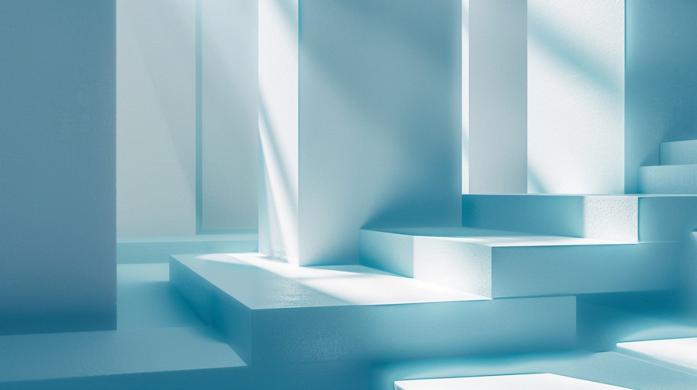

制作の流れ
作る人ではなく、事業のパートナーとして伴走します。
単発の制作ではなく、
事業の成長に貢献する発信設計を支援しています。

まずは事業内容や課題、目指している方向性を丁寧にヒアリングします。「何を作るか」ではなく、「何を目指すか」から整理します。
誰に・何を・どう届けるかを明確にし、成果につながる発信の軸と方向性を設計します。
設計した内容をもとに、SNS運用・動画などを制作します。
公開後も必要に応じて改善や運用を行い、継続的に成果につながる状態を目指します。